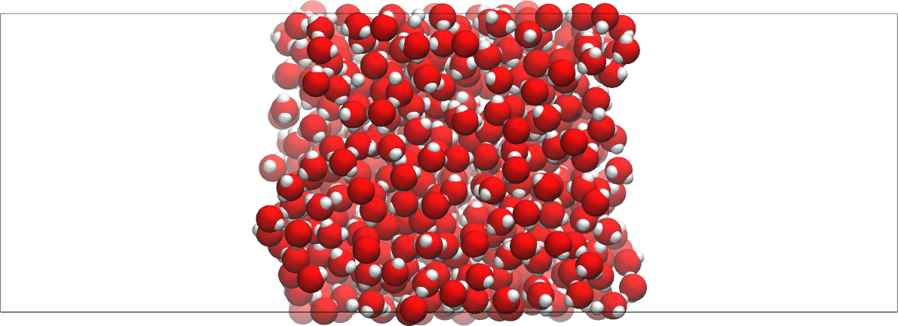

Water-vapour interface¶
Here the surface tension of a vapour-liquid-vapour sytem is calculated using LAMMPS. The input file can be downloaded here. It has been prepared using the 23Jun2022 version of LAMMPS. The system looks like that:

First we anticipate that 4 processors will be used, and that the most sensitive way to cut the system is along the x and y dimensions:
processors 2 2 1
Always ensure that using more than one core is beneficial by running some short tests.